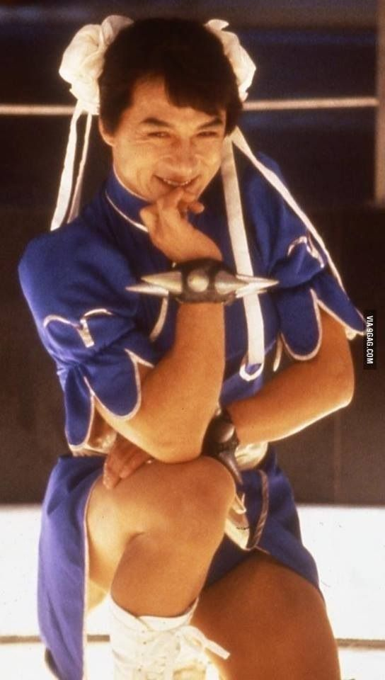
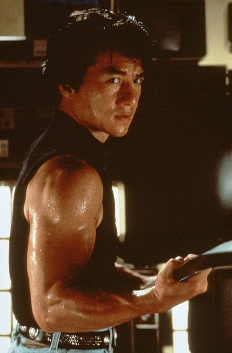

Jackie Chan
Jackie Chan (born 1954) is a Hong Kong martial artist, actor, filmmaker, and stunt performer known for blending Kung Fu with comedy, acrobatics, and elaborate stunts. Starting his career as a child actor and stuntman, Jackie quickly rose to fame with films like Drunken Master and Project A, where his unique style combined impressive martial arts with humor and physical comedy. Jackie Chan revolutionized action cinema by performing his own dangerous stunts and choreographing creative fight scenes that mixed traditional Kung Fu with modern slapstick. His Hollywood hits like Rush Hour and Shanghai Noon brought him international acclaim. Beyond entertainment, Jackie is also known for his philanthropy and dedication to martial arts culture.
 